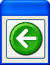
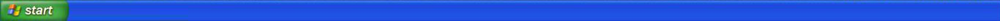
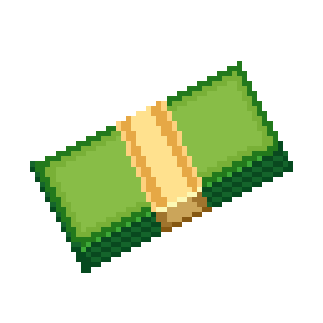

These are the viruses. Clicking on them starts the game, so make
sure you do it when ready! They also display their difficulty and a
fun fact about them if when hovering.

This is the Stat & Settings Menu. It lets you toggle sound &
downloads, and also displays useful information, including how much
windows you can have open and what your current phase is.

This is the Task Manager. It displays how much memory your computer
is taking up. You can buy an upgrade in the shop to make it smaller!

This is the Shop. You can buy upgrades here! Some upgrades are
purchaseable more than once, but most disappear after being bought.

This is the Windows Defender. It becomes available in the shop after
reaching the 5th phase of a boss! Buying it will cause it to begin
searching for viruses, and if it finds one it will remove it and you
will win!
This displays how much money you have!

$0